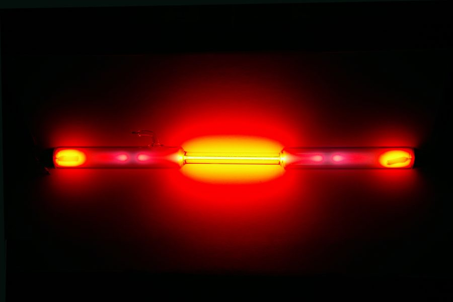
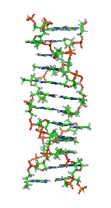
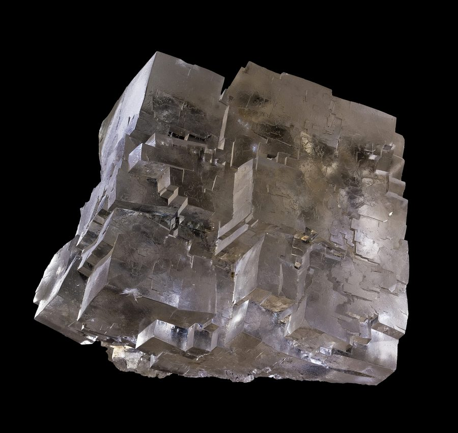
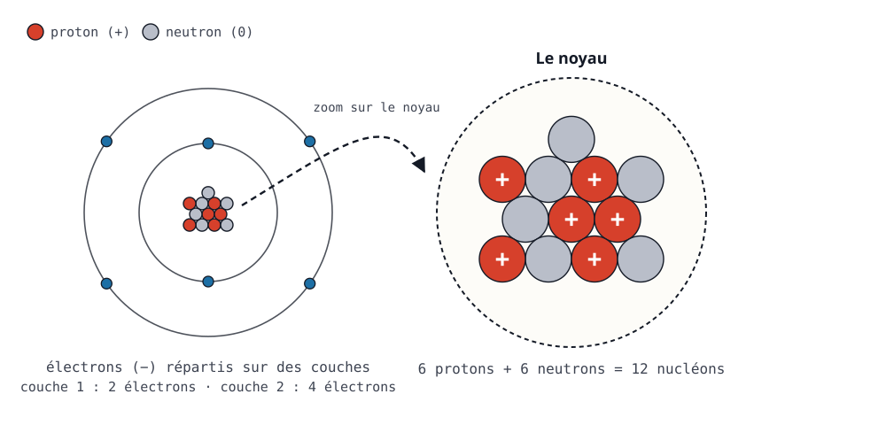
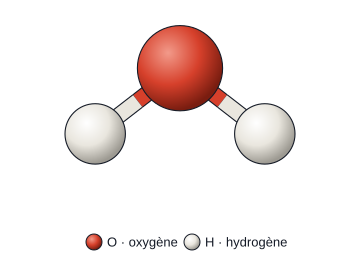
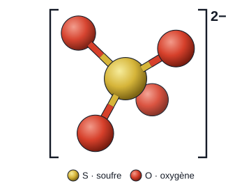
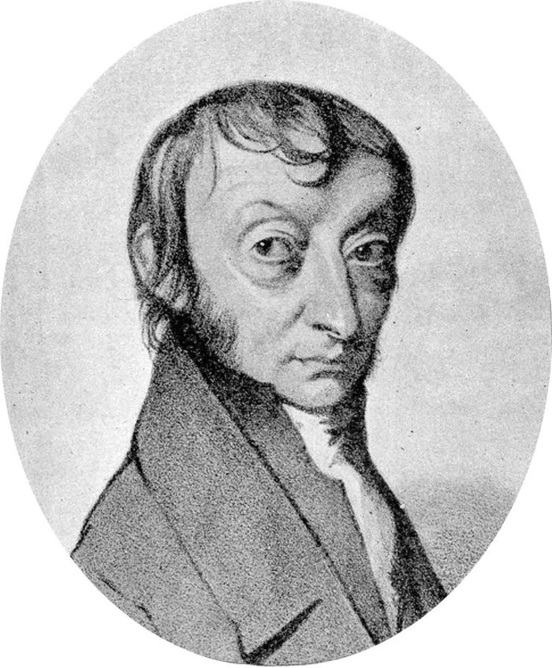
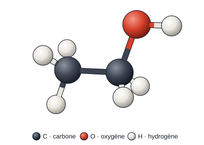
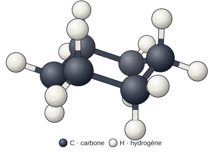

Dénombrer les entités
Ce chapitre sera débloqué en fin de séquence, au rythme de la classe. Le code de déblocage est transmis via le cahier de textes — il figure aussi en bas de ta fiche de cours.
Sommaire du chapitre
Physique-Chimie · Seconde générale · Thème 1 — Constitution et transformations de la matière
Dénombrer les entités
Thème 1 · Chapitre 4 — cours & exercices corrigés
01 Constitution de la matière
A — Électroneutralité
À l'échelle microscopique, la matière est constituée d'entités chimiques électriquement neutres, comme les atomes ou les molécules, ou chargées électriquement, comme les ions.
À l'échelle macroscopique, la matière est le plus souvent électriquement neutre. On parle alors d'électroneutralité de la matière.
Dans la structure cristalline du sel (NaCl), on trouve autant d'ions sodium Na+ que d'ions chlorure Cl− pour maintenir l'électroneutralité de l'ensemble.
Un composé ionique est électriquement neutre.
Comment se note le composé ionique dichlorure de magnésium formé à partir des ions Cl− et Mg2+ ? Même question pour le sulfure d'aluminium formé à partir des ions S2− et Al3+.
Voir la correction
Le composé doit être globalement neutre : on ajuste le nombre de chaque ion pour que la somme des charges soit nulle.
Un ion Mg2+ (charge +2) doit être associé à deux ions Cl− (charge −1 chacun), ce qui se note :
MgCl2
Pour le sulfure d'aluminium : deux ions Al3+ (soit +6) compensent trois ions S2− (soit −6), et par convention le cation s'écrit en premier :
Al2S3
Rappel de notation : dans la formule d'un composé ionique, le cation (ion positif) est toujours écrit avant l'anion (ion négatif).
B — Structures
La matière peut adopter plusieurs types de structures, parmi lesquelles :
- une structure atomique, associée au symbole de l'élément chimique qui la compose ;
- une structure moléculaire, associée à la formule brute de la molécule qui la compose ;
- une structure ionique, associée à la formule d'un cristal associant des cations et des anions.
Classer les espèces suivantes selon leur type de structure : le néon Ne, l'or Au, le saccharose C12H22O11, l'ADN, le sel de table NaCl, le sucre en morceaux.



Voir la correction
| Structure atomique | Structure moléculaire | Structure ionique |
|---|---|---|
| Le néon Ne, comme tous les gaz nobles. L'or Au, comme tous les métaux. |
Le saccharose C12H22O11. L'ADN est une macromolécule. Le sucre en morceaux : c'est du saccharose, donc la même structure moléculaire — seule l'échelle change, le morceau est un empilement macroscopique de ces molécules. |
Un sel est un composé ionique formé de cations et d'anions liés par des interactions électrostatiques et organisés en cristal électriquement neutre. C'est le cas du sel de table, le chlorure de sodium NaCl. |
02 Masse
A — Rappel : masse atomique
Avant de peser des molécules, repesons un atome — c'est un rappel du chapitre 3, Constitution de l'atome.

Les masses des particules composant l'atome sont données dans le tableau ci-dessous.
| Particule | Masse (kg) |
|---|---|
| Électron | 9,109 × 10−31 |
| Proton | 1,673 × 10−27 |
| Neutron | 1,675 × 10−27 |
Un nucléon est plus de 1800 fois plus massif qu'un électron : la masse d'un électron est négligeable devant celle d'un nucléon. Et comme le proton et le neutron ont pratiquement la même masse, la masse d'un atome ne dépend que du nombre de ses nucléons, A — d'où son nom de nombre de masse.
La masse d'un atome est la somme des masses de ses constituants, c'est-à-dire de ses protons, de ses neutrons et de ses électrons. Elle est de l'ordre de 10−26 kg.
Cette masse peut être approximée à celle de son noyau.
La masse d'un atome se calcule donc grâce à la relation suivante :
A nombre de masse (nombre de nucléons) · —
mn masse d'un nucléon · kg
mn = 1,67 × 10−27 kg
L'unité de masse atomique (u) est très utilisée en physique atomique et nucléaire : 1 u = 1,66053907 × 10−27 kg.
B — Masse des composés
La masse d'un composé chimique est la somme des masses atomiques des éléments chimiques qui le composent.


La dopamine est un neurotransmetteur de formule brute C8H11NO2.
Calculer la masse d'une molécule de dopamine.
Données — masses atomiques : mH = 1,67 × 10−27 kg · mC = 1,99 × 10−26 kg · mN = 2,33 × 10−26 kg · mO = 2,66 × 10−26 kg
Voir la correction
mcomposé = somme des masses atomiques
mC₈H₁₁NO₂ = 8 × mC + 11 × mH + mN + 2 × mO
mC₈H₁₁NO₂ = 8 × 1,99 × 10−26 + 11 × 1,67 × 10−27 + 2,33 × 10−26 + 2 × 2,66 × 10−26
mC₈H₁₁NO₂ ≈ 2,54 × 10−25 kg
03 Quantité de matière
A — Nombre d'entités
La détermination du nombre d'entités microscopiques dans un échantillon macroscopique ne peut se faire en les comptant une par une, mais par un calcul basé sur la mesure de la masse de l'échantillon.
Un panier de pommes pèse 5,4 kg. Pour savoir combien il contient de pommes, inutile de vider le panier : une pomme pèse environ 150 g, soit 0,150 kg, il suffit de diviser.
nombre de pommes = masse du paniermasse d'une pomme = 5,40,150 = 36
Le chimiste fait exactement la même chose : il pèse l'échantillon et divise par la masse d'une entité. La balance remplace le comptage.
méch masse de l'échantillon · kg
ment masse d'une entité · kg
Un rouleau de papier aluminium (200 m × 45 cm × 11 µm) a une masse de 2,67 kg. L'aluminium est présent dans la nature uniquement sous la forme d'aluminium 27 (noyaux 2713Al).
Calculer le nombre d'atomes d'aluminium constituant ce rouleau.
Données : mn = 1,67 × 10−27 kg
Voir la correction
La masse d'une entité (un atome d'aluminium 27) s'obtient à partir de son nombre de masse :
ment = mAl = A × mn
On injecte cette expression dans la formule du nombre d'entités :
N = méchment = méchA × mn
N = 2,6727 × 1,67 × 10−27 ≈ 5,92 × 1025
Un rouleau de papier d'aluminium contient environ 5,92 × 1025 atomes d'aluminium 27.
B — La mole
Pour pouvoir manipuler des éléments chimiques (quelques grammes), il faudrait en utiliser un très grand nombre étant donné leur taille (plusieurs milliards de milliards). Une unité de quantité de matière a été créée : la mole, dont le symbole est mol. Une mole de matière correspond à une quantité de matière qui peut être manipulée lors d'une expérience en chimie.
Une mole de matière correspond à un nombre d'atomes, de molécules ou d'ions donné par le nombre d'Avogadro : une mole contient 6,02 × 1023 entités. La constante d'Avogadro NA exprime ce nombre d'entités par mole :
NA = 6,02 × 1023 mol−1
Ce nombre correspond au nombre d'atomes de carbone contenus dans 12 g de carbone 12.

Amedeo Avogadro (1776–1856), physicien italien
C'est en l'honneur d'Avogadro que la constante reliant l'échelle microscopique à l'échelle macroscopique porte son nom. Il énonça en 1811 l'hypothèse selon laquelle des volumes égaux de gaz différents, dans les mêmes conditions de température et de pression, contiennent le même nombre de molécules.
Revenons à nos 36 pommes. Le marchand ne les compte pas une à une : il les compte par douzaines.
Pour passer du nombre de pommes au nombre de douzaines, on divise par 12 : 36 ÷ 12 = 3 douzaines.
La mole est la « douzaine » du chimiste, et la constante d'Avogadro remplace le 12 : 1 mol contient NA entités, 2 mol en contiennent 2 × NA, et n moles en contiennent n × NA. Pour retrouver le nombre de moles, on divise donc le nombre d'entités par NA.
N nombre d'entités · —
NA nombre d'Avogadro · mol−1
NA = 6,02 × 1023 mol−1
Il existe une relation de proportionnalité entre la quantité de matière n et le nombre d'entités N : deux fois plus d'entités, c'est deux fois plus de moles. Le coefficient de proportionnalité est la constante d'Avogadro, ce qui s'écrit aussi :
N = n × NA
Quelle est la quantité de matière d'un échantillon contenant N = 21 × 1023 entités identiques ?
Voir la correction
n = NNA
n = 21 × 10236,02 × 1023 ≈ 3,5 mol
L'échantillon contient 3,5 mol de matière.
C — La masse molaire
La masse molaire atomique M est la masse d'une mole d'atomes de l'élément chimique considéré. Elle s'exprime en g/mol.
🍎 Dans notre panier, la « masse molaire » serait la masse d'une douzaine de pommes : 12 × 150 g = 1,8 kg par douzaine.
Chaque case de la classification périodique porte le nombre de masse A (le nombre de nucléons du noyau, sans unité) et la masse molaire atomique M. Ces deux nombres sont distincts, mais pour de nombreux éléments ils sont numériquement très proches : la masse d'une mole d'atomes vaut environ A grammes, soit M ≈ A g·mol−1.
Pour l'hydrogène 11H, une mole d'atomes pèse 1 g → M(H) = 1 g/mol.
Pour le carbone 126C, une mole d'atomes pèse 12 g → M(C) = 12 g/mol.
Pour l'oxygène 168O, une mole d'atomes pèse 16 g → M(O) = 16 g/mol.
Un ion est un atome qui a perdu ou gagné un ou plusieurs électrons. La masse d'un atome correspond à la masse de son noyau, car l'électron a une masse négligeable devant celle du nucléon. On peut donc dire que la masse molaire d'un ion est égale à celle de l'atome dont il est issu.
M(H+) = M(H) = 1 g/mol
Donner les valeurs des masses molaires atomiques des éléments chlore (Cl) et calcium (Ca) à l'aide de la classification périodique, et en déduire les masses molaires ioniques des espèces Cl− et Ca2+.
Voir la correction
M(Cl) = M(Cl−) = 35,45 g·mol−1
M(Ca) = M(Ca2+) = 40,08 g·mol−1
La masse molaire moléculaire est la masse d'une mole de molécules du corps pur considéré. Elle est égale à la somme des masses molaires atomiques des éléments qui composent le corps pur.
Le dioxyde de carbone CO2 est composé d'un atome de carbone et de deux atomes d'oxygène. Avec M(C) = 12 g/mol et M(O) = 16 g/mol :
M(CO2) = M(C) + 2 × M(O) = 12 + 2 × 16 = 44 g/mol
Calculer les masses molaires moléculaires de l'eau et du méthane CH4.
Voir la correction
M(H2O) = 2 × M(H) + M(O) = 2 × 1 + 16 = 18 g/mol
M(CH4) = M(C) + 4 × M(H) = 12 + 4 × 1 = 16 g/mol
Un atome d'or a pour masse 3,27 × 10−22 g.
Quelle est la masse d'une mole d'atomes d'or ? Comparer cette valeur avec celle de la classification périodique.
Donnée : la masse molaire M est la masse d'une mole d'entités, d'où M = m × NA.
Voir la correction
M(Au) = mAu × NA
M(Au) = 3,27 × 10−22 × 6,02 × 1023 ≈ 197 g/mol
Cette valeur est cohérente avec celle de la classification périodique (M′(Au) = 196,966569 g·mol−1).
Après avoir recherché les masses molaires atomiques nécessaires, calculer la masse molaire de la molécule de chlorophylle de formule brute C55H72MgN4O5.
Données : M(C) = 12,0 · M(H) = 1,0 · M(Mg) = 24,3 · M(N) = 14,0 · M(O) = 16,0 (en g·mol−1)
Voir la correction
M = 55 × M(C) + 72 × M(H) + M(Mg) + 4 × M(N) + 5 × M(O)
M = 55 × 12,0 + 72 × 1,0 + 24,3 + 4 × 14,0 + 5 × 16,0 = 892,3 ≈ 892 g·mol−1
D — Relation entre quantité de matière, masse et masse molaire
Une relation relie la masse m d'un échantillon à sa quantité de matière n, par l'intermédiaire de la masse molaire M de l'espèce chimique.
Combien de douzaines dans notre panier de 5,4 kg ? Une douzaine pèse 1,8 kg :
nombre de douzaines = masse du paniermasse d'une douzaine = 5,41,8 = 3
On retrouve les 3 douzaines, sans même passer par le nombre de pommes. C'est la relation ci-dessous : la masse de l'échantillon divisée par la masse d'une mole.
Limite de l'analogie : une douzaine compte 12 pommes, une mole 6,02 × 1023 entités — un nombre si grand que quelques grammes de matière en contiennent déjà une.
m masse · g
M masse molaire · g·mol−1
On a un échantillon de masse m = 4,0 g de sulfate de cuivre CuSO4.
Calculer la quantité de matière nCuSO₄ de l'échantillon.
Données : M(Cu) = 63,5 · M(S) = 32,1 · M(O) = 16,0 (en g·mol−1)
Voir la correction
M(CuSO4) = M(Cu) + M(S) + 4 × M(O) = 63,5 + 32,1 + 4 × 16,0 = 159,6 g/mol
nCuSO₄ = mM(CuSO4)
nCuSO₄ = 4,0159,6 ≈ 0,025 mol = 25 mmol
On prélève un volume V = 25 mL d'éthanol de formule C2H6O et de masse volumique ρ = 0,789 g·mL−1.
Donner la masse m et la quantité de matière n prélevées.

Données : M(C) = 12,0 · M(H) = 1,0 · M(O) = 16,0 (en g·mol−1)
Voir la correction
On calcule d'abord la masse à partir de la masse volumique :
m = ρ × V = 0,789 × 25 = 19,725 ≈ 20 g
n = mM(C2H6O) = ρ × V2 × M(C) + 6 × M(H) + M(O)
n = 0,789 × 252 × 12 + 6 × 1 + 16 ≈ 0,43 mol
On prélève un volume V = 12,0 mL de cyclohexane de formule C6H12 et de masse volumique ρ = 0,7786 g·mL−1.
Donner l'expression de la quantité de matière n en fonction de ρ, V et M(C6H12), puis la calculer.

Données : M(C) = 12,0 · M(H) = 1,0 (en g·mol−1)
Voir la correction
n = mM(C6H12) = ρ × V6 × M(C) + 12 × M(H)
n = 0,7786 × 12,06 × 12 + 12 × 1 ≈ 0,111 mol
✓ Pour le DS, je sais :
M. Van HoordeLycée général Isaac de l'Étoile · Poitiers